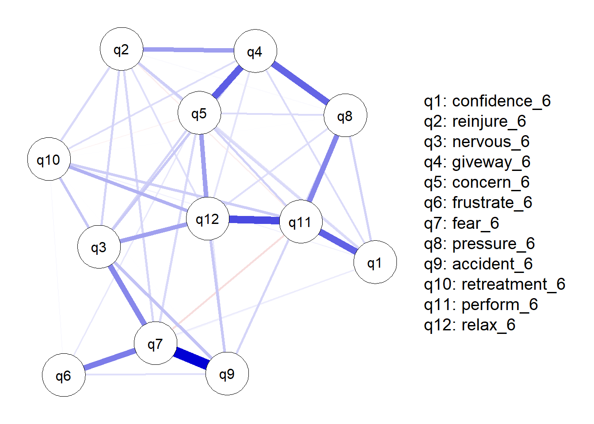
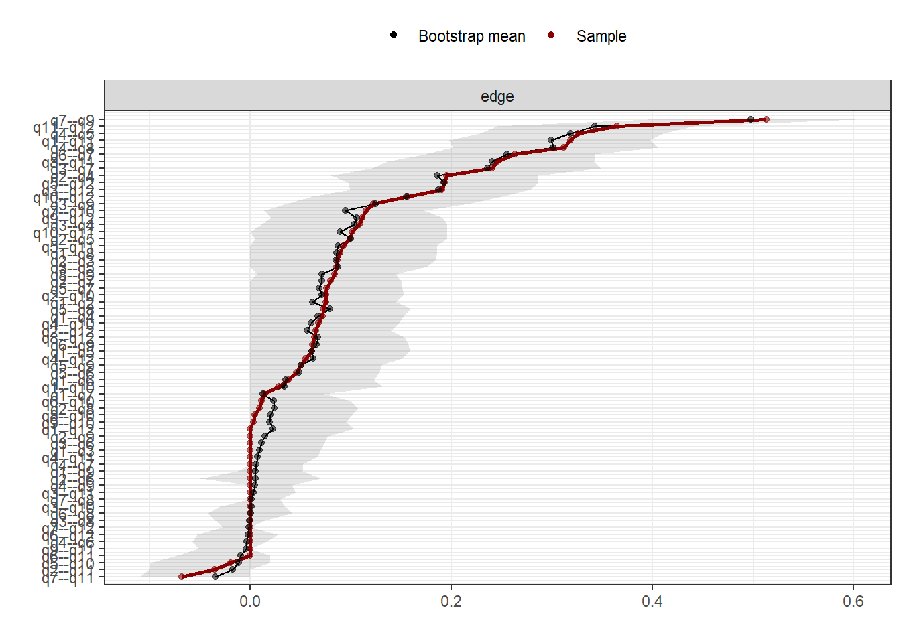
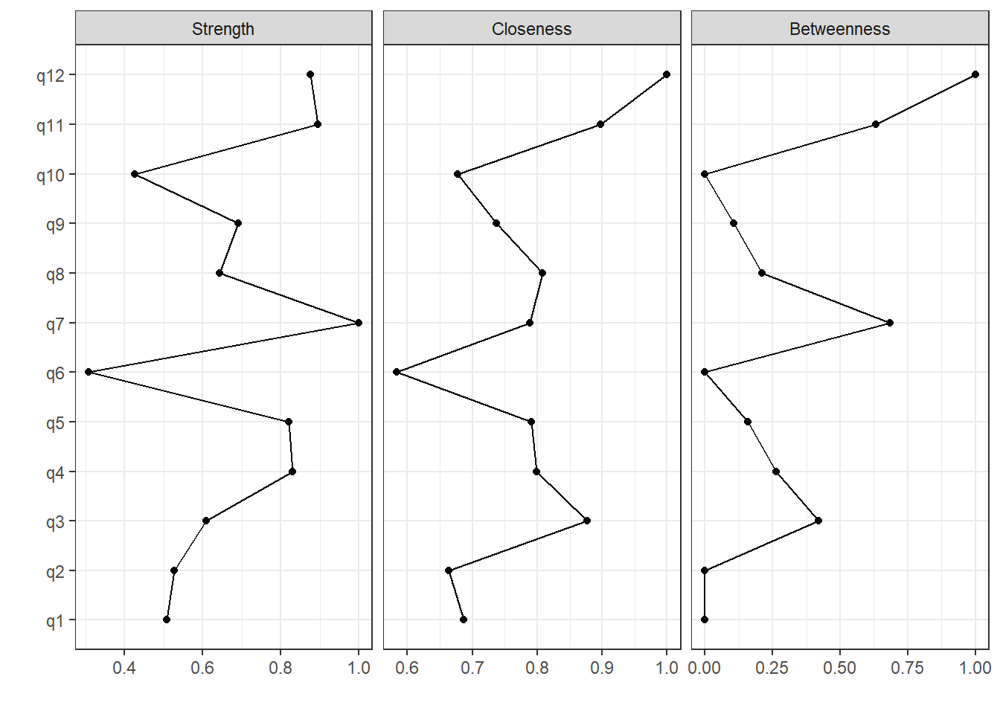
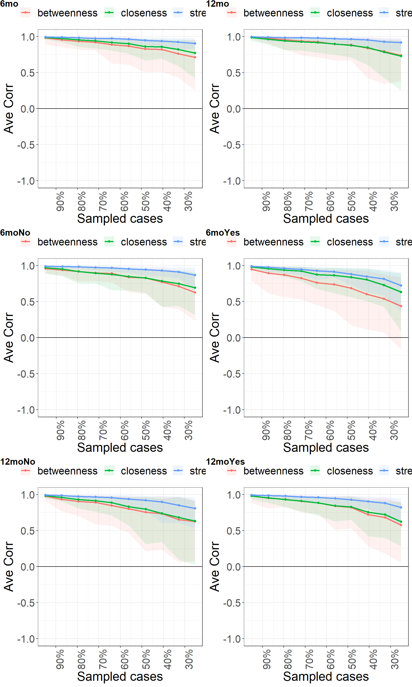
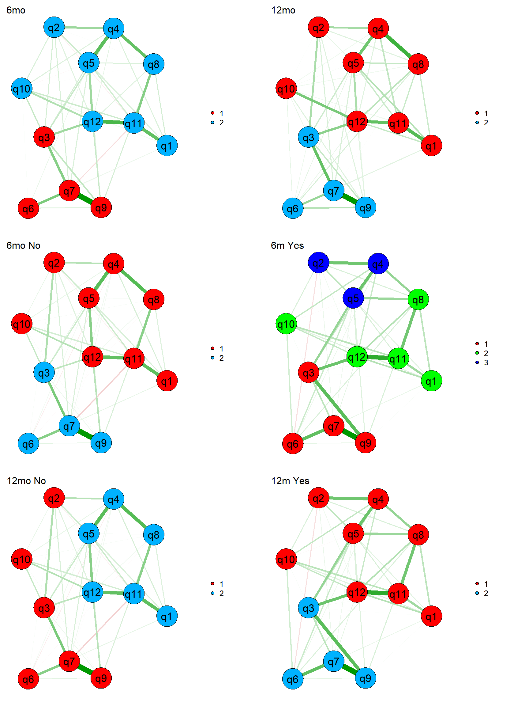
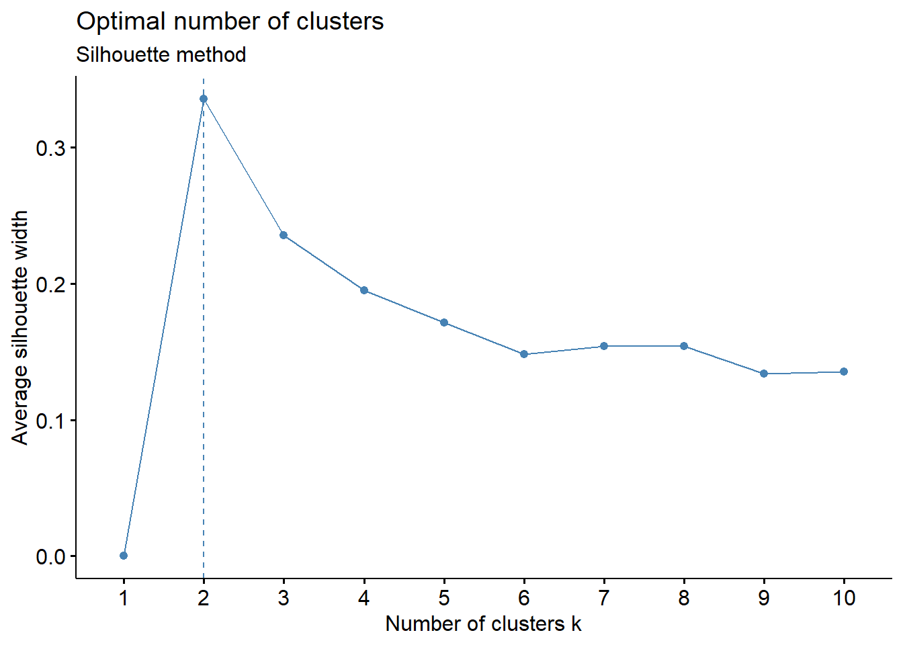
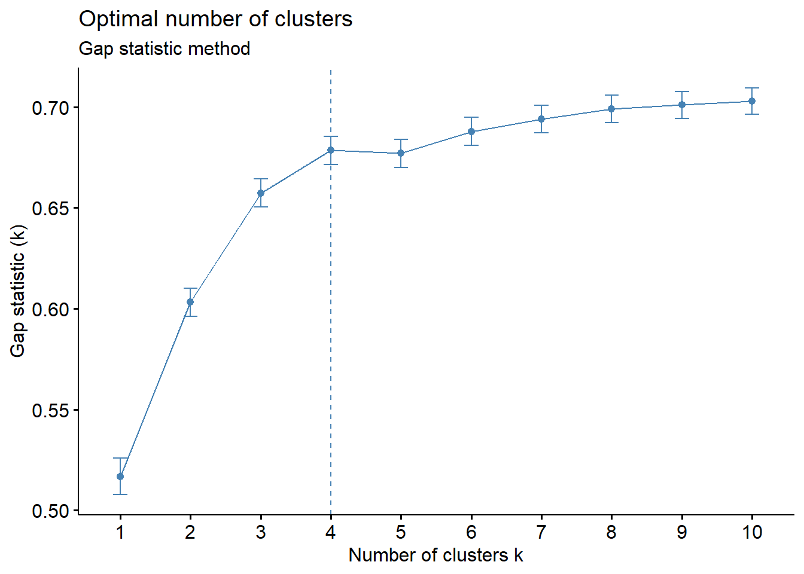
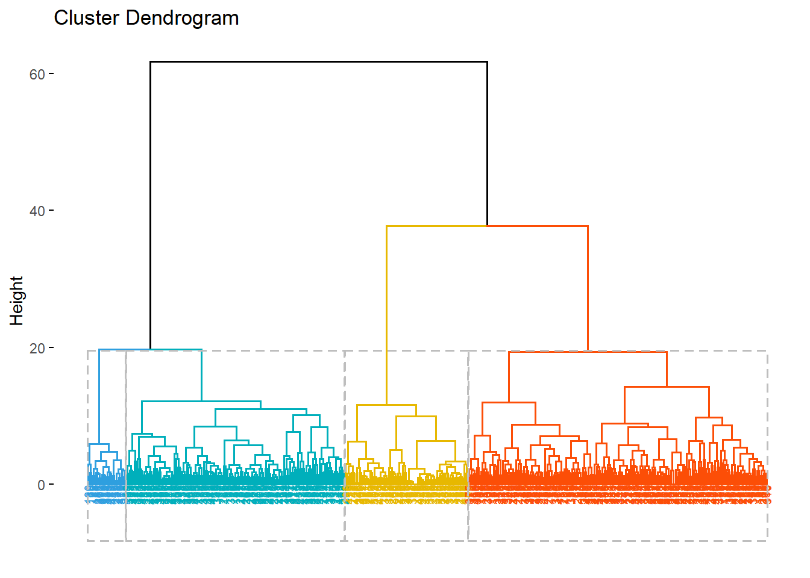
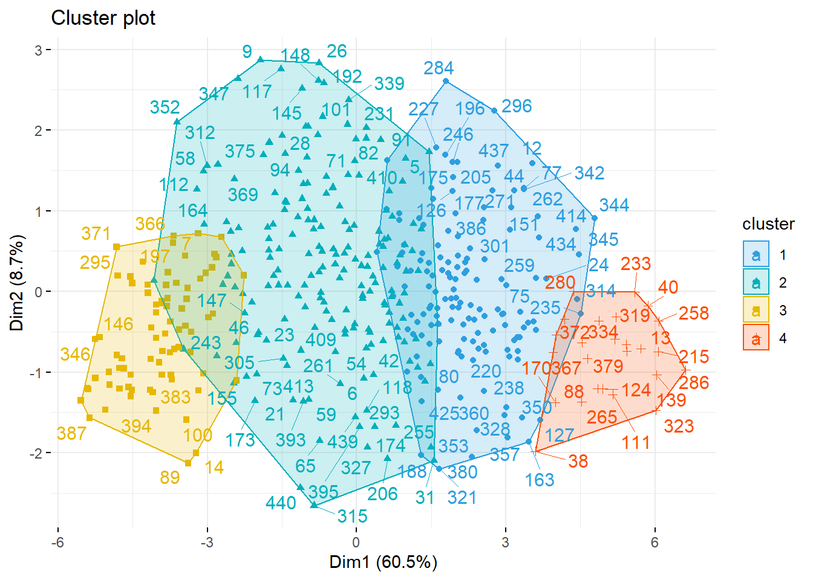

2-analysis
bernard-liew
2021-02-19
Last updated: 2021-02-19
Checks: 6 1
Knit directory: acl_rsi/
This reproducible R Markdown analysis was created with workflowr (version 1.6.2). The Checks tab describes the reproducibility checks that were applied when the results were created. The Past versions tab lists the development history.
The R Markdown is untracked by Git. To know which version of the R Markdown file created these results, you’ll want to first commit it to the Git repo. If you’re still working on the analysis, you can ignore this warning. When you’re finished, you can run wflow_publish to commit the R Markdown file and build the HTML.
Great job! The global environment was empty. Objects defined in the global environment can affect the analysis in your R Markdown file in unknown ways. For reproduciblity it’s best to always run the code in an empty environment.
The command set.seed(20210219) was run prior to running the code in the R Markdown file. Setting a seed ensures that any results that rely on randomness, e.g. subsampling or permutations, are reproducible.
Great job! Recording the operating system, R version, and package versions is critical for reproducibility.
Nice! There were no cached chunks for this analysis, so you can be confident that you successfully produced the results during this run.
Great job! Using relative paths to the files within your workflowr project makes it easier to run your code on other machines.
Great! You are using Git for version control. Tracking code development and connecting the code version to the results is critical for reproducibility.
The results in this page were generated with repository version 919c2b1. See the Past versions tab to see a history of the changes made to the R Markdown and HTML files.
Note that you need to be careful to ensure that all relevant files for the analysis have been committed to Git prior to generating the results (you can use wflow_publish or wflow_git_commit). workflowr only checks the R Markdown file, but you know if there are other scripts or data files that it depends on. Below is the status of the Git repository when the results were generated:
Ignored files:
Ignored: .Rproj.user/
Untracked files:
Untracked: analysis/1-explore.Rmd
Untracked: analysis/2-analysis.Rmd
Untracked: data/Data acl-rsi network analysis (relevant variables only) deidentified.xlsx
Untracked: data/key.xlsx
Untracked: output/dat_acl.RDS
Note that any generated files, e.g. HTML, png, CSS, etc., are not included in this status report because it is ok for generated content to have uncommitted changes.
There are no past versions. Publish this analysis with wflow_publish() to start tracking its development.
Load package
# Helper
library (tidyverse)
library (arsenal)
# Modelling
library (huge)
library (bootnet)
library (qgraph)
library (factoextra)
library (FactoMineR)Import
df <- readRDS ("output/dat_acl.RDS")Network analysis
Preprocess
# Select rsi at 6th mth
mat <- df %>%
select (matches ("_6")) %>%
select (!matches ("ax_6m|aclrsi|rts_"))
var_names <- names (mat)
names(mat) <- paste0("q", 1:ncol (mat))
#Normalize data
mat.npn <- huge.npn(mat)Conducting the nonparanormal (npn) transformation via shrunkun ECDF....done.Modelling
B <- 1000
stats_type <- c("edge", "strength", "betweenness", "expectedInfluence", "closeness")
nw <- estimateNetwork(mat.npn,
default="EBICglasso",
corMethod = "cor",
tuning = 0.5,
lambda.min.ratio = 0.001,
corArgs =
list(method = "pearson",
use = "pairwise.complete.obs"))
centr <- centralityTable (nw)
centr_stb <- bootnet (nw,
nBoots = B,
type = "case",
statistics = stats_type,
verbose = FALSE)
cor_stb <- corStability(centr_stb)=== Correlation Stability Analysis ===
Sampling levels tested:
nPerson Drop% n
1 110 75.1 106
2 145 67.1 108
3 179 59.4 108
4 213 51.7 109
5 247 44.0 104
6 282 36.1 87
7 316 28.3 103
8 350 20.6 89
9 385 12.7 100
10 419 5.0 86
Maximum drop proportions to retain correlation of 0.7 in at least 95% of the samples:
betweenness: 0.517
- For more accuracy, run bootnet(..., caseMin = 0.44, caseMax = 0.594)
closeness: 0.517
- For more accuracy, run bootnet(..., caseMin = 0.44, caseMax = 0.594)
edge: 0.751 (CS-coefficient is highest level tested)
- For more accuracy, run bootnet(..., caseMin = 0.671, caseMax = 1)
expectedInfluence: 0.751 (CS-coefficient is highest level tested)
- For more accuracy, run bootnet(..., caseMin = 0.671, caseMax = 1)
strength: 0.751 (CS-coefficient is highest level tested)
- For more accuracy, run bootnet(..., caseMin = 0.671, caseMax = 1)
Accuracy can also be increased by increasing both 'nBoots' and 'caseN'.edgewts <- bootnet (nw,
nBoots = B,
verbose = FALSE)Results
Plot network
Blue edges - positive correlation
Red edges - negative correlation
The thickness of the edges indicate the magnitude of correlation.
# Visualize network
plot (nw, nodeNames = var_names)
Plot edge weights stability
95%CI of different edge weights that do not overlap are significantly different
# Edge weights stability
plot (edgewts, order = "sample")
Plot centrality
High centrality nodes have strong connections to many other nodes, and act as hubs that connect otherwise disparate nodes to one another.
Low centrality nodes exist on the periphery of the network, with fewer and weaker connections to other nodes of the network.
Strength is the sum of the absolute value of its connections with other nodes in the network.
Degree can be straightforwardly generalized to weighted networks by considering the sum of the weights of the connections (in absolute value), instead of their number. This generalization is called strength.
Closeness centrality is defined as the inverse of the sum of the distances of the focal node from all the other nodes in the network. Closeness is the average shortest path between a given node and the remaining nodes in the network. Nodes with higher closeness are more proximally connected to the rest of the network.
Betweenness is the number of times in which a given node lies on the shortest path between two other nodes.
The greater the value of centrality indices to one, the more important the variable.
# Importance
centralityPlot (nw, include = c("Strength", "Closeness", "Betweenness"), scale = "relative")
Plot centrality stability
# Centrality stability
plot (centr_stb, statistics = c("closeness", "strength", "betweenness"))
Clustering
Preprocess
mat <- scale(mat)Get distance measure
mat_dist <- dist(mat, method = "euclidean")
fviz_dist(mat_dist)
res.hc <- hclust(d = mat_dist, method = "ward.D2")
# Compute cophentic distance
res.coph <- cophenetic(res.hc)
# Correlation between cophenetic distance and
# the original distance
cor(mat_dist, res.coph)[1] 0.5430002Optimal clusters
# Elbow method
fviz_nbclust(mat, kmeans, method = "wss") +
geom_vline(xintercept = 4, linetype = 2)+
labs(subtitle = "Elbow method")
# Silhouette method
fviz_nbclust(mat, kmeans, method = "silhouette")+
labs(subtitle = "Silhouette method")
# Gap statistic
# nboot = 50 to keep the function speedy.
# recommended value: nboot= 500 for your analysis.
# Use verbose = FALSE to hide computing progression.
set.seed(123)
fviz_nbclust(mat, kmeans, nstart = 25, method = "gap_stat", nboot = 50)+
labs(subtitle = "Gap statistic method")Warning: did not converge in 10 iterations
Warning: did not converge in 10 iterations
Cut tree and visualize
cut_n <- 4
grp <- cutree(res.hc, k = cut_n )
# Cut in 4 groups and color by groups
fviz_dend(res.hc, k = cut_n, # Cut in four groups
cex = 0.5, # label size
k_colors = c("#2E9FDF", "#00AFBB", "#E7B800", "#FC4E07"),
color_labels_by_k = TRUE, # color labels by groups
rect = TRUE)
fviz_cluster(list(data = mat, cluster = grp),
axes = 1:2,
palette = c("#2E9FDF", "#00AFBB", "#E7B800", "#FC4E07"),
ellipse.type = "convex", # Concentration ellipse
repel = TRUE, # Avoid label overplotting (slow)
show.clust.cent = FALSE, ggtheme = theme_minimal())
Understand clusters
df_grp <- df %>%
select (subj, dob, sex, graft, matches ("pre_|aclrsi|rts"))
df_grp$clus <- factor (grp)
tableby(clus ~ sex + pre_sports_level + pre_sports_freq + rts_exp + aclrsi_6 + aclrsi_12 + rts_12 + rts_6,
data = na.omit (df_grp)) %>%
summary ()| 1 (N=142) | 2 (N=191) | 3 (N=80) | 4 (N=25) | Total (N=438) | p value | |
|---|---|---|---|---|---|---|
| sex | 0.277 | |||||
| Female | 68 (47.9%) | 73 (38.2%) | 31 (38.8%) | 12 (48.0%) | 184 (42.0%) | |
| Male | 74 (52.1%) | 118 (61.8%) | 49 (61.2%) | 13 (52.0%) | 254 (58.0%) | |
| pre_sports_level | 0.004 | |||||
| Frequent sports | 80 (56.3%) | 105 (55.0%) | 32 (40.0%) | 13 (52.0%) | 230 (52.5%) | |
| High level competitive sports | 47 (33.1%) | 69 (36.1%) | 43 (53.8%) | 8 (32.0%) | 167 (38.1%) | |
| Hihg level competitive sportd | 0 (0.0%) | 1 (0.5%) | 0 (0.0%) | 0 (0.0%) | 1 (0.2%) | |
| Professional athlete | 1 (0.7%) | 4 (2.1%) | 5 (6.2%) | 0 (0.0%) | 10 (2.3%) | |
| Sports sometimes | 14 (9.9%) | 12 (6.3%) | 0 (0.0%) | 4 (16.0%) | 30 (6.8%) | |
| pre_sports_freq | 0.045 | |||||
| 1-3 days per week | 64 (45.1%) | 77 (40.3%) | 23 (28.8%) | 11 (44.0%) | 175 (40.0%) | |
| 1-3 times per month | 4 (2.8%) | 4 (2.1%) | 0 (0.0%) | 2 (8.0%) | 10 (2.3%) | |
| 4-7 days per week | 74 (52.1%) | 110 (57.6%) | 57 (71.2%) | 12 (48.0%) | 253 (57.8%) | |
| rts_exp | < 0.001 | |||||
| No | 16 (11.3%) | 5 (2.6%) | 1 (1.2%) | 4 (16.0%) | 26 (5.9%) | |
| Yes | 126 (88.7%) | 186 (97.4%) | 79 (98.8%) | 21 (84.0%) | 412 (94.1%) | |
| aclrsi_6 | < 0.001 | |||||
| Mean (SD) | 36.067 (7.537) | 59.454 (9.847) | 87.129 (6.893) | 13.113 (6.628) | 54.282 (22.033) | |
| Range | 14.000 - 50.000 | 42.000 - 89.000 | 72.000 - 100.000 | 0.000 - 25.833 | 0.000 - 100.000 | |
| aclrsi_12 | < 0.001 | |||||
| Mean (SD) | 53.082 (19.985) | 71.691 (17.989) | 89.510 (16.916) | 34.897 (18.179) | 66.813 (23.742) | |
| Range | 0.000 - 100.000 | 30.000 - 100.000 | 0.000 - 100.000 | 13.000 - 85.000 | 0.000 - 100.000 | |
| rts_12 | < 0.001 | |||||
| No | 73 (51.4%) | 49 (25.7%) | 11 (13.8%) | 19 (76.0%) | 152 (34.7%) | |
| Training only | 0 (0.0%) | 2 (1.0%) | 1 (1.2%) | 1 (4.0%) | 4 (0.9%) | |
| Yes, at a lower level compared to before injury | 12 (8.5%) | 37 (19.4%) | 9 (11.2%) | 2 (8.0%) | 60 (13.7%) | |
| Yes, at the same or higher level compared to before injury | 23 (16.2%) | 44 (23.0%) | 45 (56.2%) | 2 (8.0%) | 114 (26.0%) | |
| Yes, training only | 34 (23.9%) | 59 (30.9%) | 14 (17.5%) | 1 (4.0%) | 108 (24.7%) | |
| rts_6 | < 0.001 | |||||
| NA | 1 (0.7%) | 0 (0.0%) | 0 (0.0%) | 0 (0.0%) | 1 (0.2%) | |
| No | 111 (78.2%) | 127 (66.5%) | 37 (46.2%) | 22 (88.0%) | 297 (67.8%) | |
| Not applicable, I did not play sport before my knee injury | 1 (0.7%) | 1 (0.5%) | 0 (0.0%) | 1 (4.0%) | 3 (0.7%) | |
| Yes, at a lower level compared to before injury | 2 (1.4%) | 11 (5.8%) | 9 (11.2%) | 0 (0.0%) | 22 (5.0%) | |
| Yes, at the same or higher level compared to before injury | 1 (0.7%) | 1 (0.5%) | 3 (3.8%) | 0 (0.0%) | 5 (1.1%) | |
| Yes, training only | 26 (18.3%) | 50 (26.2%) | 31 (38.8%) | 2 (8.0%) | 109 (24.9%) | |
| Ypre | 0 (0.0%) | 1 (0.5%) | 0 (0.0%) | 0 (0.0%) | 1 (0.2%) |
sessionInfo()R version 4.0.2 (2020-06-22)
Platform: x86_64-w64-mingw32/x64 (64-bit)
Running under: Windows 10 x64 (build 18363)
Matrix products: default
locale:
[1] LC_COLLATE=English_United Kingdom.1252
[2] LC_CTYPE=English_United Kingdom.1252
[3] LC_MONETARY=English_United Kingdom.1252
[4] LC_NUMERIC=C
[5] LC_TIME=English_United Kingdom.1252
attached base packages:
[1] stats graphics grDevices utils datasets methods base
other attached packages:
[1] FactoMineR_2.4 factoextra_1.0.7 qgraph_1.6.5 bootnet_1.4.6
[5] huge_1.3.4.1 arsenal_3.5.0 forcats_0.5.0 stringr_1.4.0
[9] dplyr_1.0.2 purrr_0.3.4 readr_1.4.0 tidyr_1.1.2
[13] tibble_3.0.4 ggplot2_3.3.3 tidyverse_1.3.0
loaded via a namespace (and not attached):
[1] R.utils_2.10.1 tidyselect_1.1.0 htmlwidgets_1.5.3
[4] grid_4.0.2 munsell_0.5.0 codetools_0.2-18
[7] DT_0.17 withr_2.3.0 colorspace_2.0-0
[10] NetworkToolbox_1.4.1 highr_0.8 knitr_1.30
[13] rstudioapi_0.13 leaps_3.1 stats4_4.0.2
[16] ggsignif_0.6.0 labeling_0.4.2 git2r_0.27.1
[19] mnormt_2.0.2 farver_2.0.3 rprojroot_2.0.2
[22] vctrs_0.3.6 generics_0.1.0 xfun_0.20
[25] R6_2.5.0 doParallel_1.0.16 smacof_2.1-1
[28] reshape_0.8.8 assertthat_0.2.1 promises_1.1.1
[31] scales_1.1.1 nnet_7.3-14 gtable_0.3.0
[34] weights_1.0.1 workflowr_1.6.2 rlang_0.4.10
[37] scatterplot3d_0.3-41 splines_4.0.2 rstatix_0.6.0
[40] wordcloud_2.6 broom_0.7.4.9000 checkmate_2.0.0
[43] yaml_2.2.1 reshape2_1.4.4 abind_1.4-5
[46] modelr_0.1.8 d3Network_0.5.2.1 backports_1.2.0
[49] httpuv_1.5.4 Hmisc_4.4-2 tools_4.0.2
[52] psych_2.0.12 lavaan_0.6-7 ellipsis_0.3.1
[55] RColorBrewer_1.1-2 polynom_1.4-0 Rcpp_1.0.6
[58] plyr_1.8.6 base64enc_0.1-3 ggpubr_0.4.0
[61] rpart_4.1-15 viridis_0.5.1 pbapply_1.4-3
[64] haven_2.3.1 ggrepel_0.9.0 cluster_2.1.0
[67] fs_1.5.0 survey_4.0 magrittr_2.0.1
[70] data.table_1.13.6 openxlsx_4.2.3 reprex_0.3.0
[73] tmvnsim_1.0-2 mvtnorm_1.1-1 matrixcalc_1.0-3
[76] whisker_0.4 hms_0.5.3 evaluate_0.14
[79] rio_0.5.16 jpeg_0.1-8.1 readxl_1.3.1
[82] gridExtra_2.3 shape_1.4.5 compiler_4.0.2
[85] ellipse_0.4.2 mice_3.12.0 GGMncv_2.0.0
[88] crayon_1.3.4 R.oo_1.24.0 htmltools_0.5.0
[91] corpcor_1.6.9 later_1.1.0.1 Formula_1.2-4
[94] snow_0.4-3 lubridate_1.7.9.2 DBI_1.1.0
[97] relaimpo_2.2-3 mgm_1.2-10 dbplyr_2.0.0
[100] MASS_7.3-53 boot_1.3-25 IsingSampler_0.2.1
[103] Matrix_1.2-18 IsingFit_0.3.1 car_3.0-10
[106] cli_2.2.0 heplots_1.3-7 mitools_2.4
[109] R.methodsS3_1.8.1 gdata_2.18.0 parallel_4.0.2
[112] igraph_1.2.6 BDgraph_2.63 pkgconfig_2.0.3
[115] flashClust_1.01-2 numDeriv_2016.8-1.1 foreign_0.8-81
[118] xml2_1.3.2 foreach_1.5.1 pbivnorm_0.6.0
[121] rvest_0.3.6 digest_0.6.27 rmarkdown_2.6
[124] cellranger_1.1.0 htmlTable_2.1.0 dendextend_1.14.0
[127] glassoFast_1.0 curl_4.3 gtools_3.8.2
[130] rjson_0.2.20 lifecycle_0.2.0 nlme_3.1-151
[133] glasso_1.11 jsonlite_1.7.2 carData_3.0-4
[136] viridisLite_0.3.0 fansi_0.4.1 pillar_1.4.7
[139] lattice_0.20-41 httr_1.4.2 plotrix_3.7-8
[142] survival_3.2-7 glue_1.4.2 networktools_1.2.3
[145] zip_2.1.1 fdrtool_1.2.16 png_0.1-7
[148] iterators_1.0.13 candisc_0.8-3 glmnet_4.0-2
[151] class_7.3-17 stringi_1.5.3 nnls_1.4
[154] latticeExtra_0.6-29 eigenmodel_1.11 e1071_1.7-4